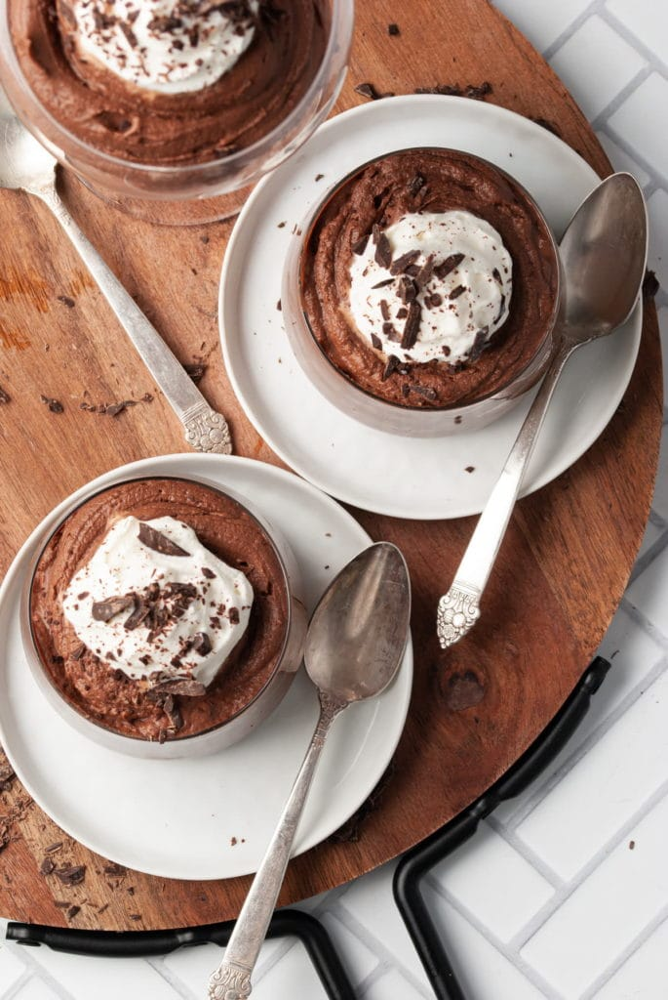

Sinful Boozy Chocolate Mousse Recipe

Description
I wasted YEARS of my life being too scared to try to make mousse on my own. But now here I am adding Brandy to it and convincing you to try! There are a couple of important lessons I learned while experimenting and gaining this mousse-making confidence.
So kick back, “taste test” some of that Brandy, and let's get to it! Because there is no time like the present to make a boozy chocolate recipe!
Ingredients
- 1 ½ cups Dark Chocolate Chips
- 1 ½ cups Heavy Whipping Cream
- 2 Large Egg Whites
- ½ cup Sugar
- ¼ cup Brandy
Steps
- Melt your chocolate chips over a double boiler and then set aside to cool.
- 1 ½ cups Dark Chocolate Chips
- Use a hand mixer to whip your heavy cream until stiff peaks form.
- 1 ½ cups Heavy Whipping Cream
- Once the chocolate is at room temperature, fold it into the heavy cream and then whip on high until thick and creamy.Once the chocolate is at room temperature, fold it into the heavy cream and then whip on high until thick and creamy.
- In a separate bowl, beat egg whites and sugar together until thick and sticky- about 3 minutes.
- 2 Large Egg Whites
- ½ cup Sugar
- With your mixer on high, add egg white/sugar mixture into your chocolate cream.
- Keep your mixer on and slowly add brandy, in about 3 separate pours.
- Cover and refrigerate for at least 1 hour.
- Whip one more time to aerate. Serve as is, or whip up some extra cream for on top and add shaved chocolate for garnish.